Báo cáo tiến độ và pipeline tổng quát của project Real2Sim, để mentor góp ý và xác nhận hướng đi.
Lâm Quang Anh Quân · Lương Sỹ Khánh · Đặng Thái Anh · Phạm Minh Hiếu · 11/2026
Vì sao có report, cấu trúc và trạng thái hiện tại
Goal, đặc tả, deliverables, scope cần xác nhận
Vấn đề khi so sánh nhiều approach, cách chuẩn hóa
Các hệ thống Real2Sim và kiến trúc 5 subsystem
Cần dữ liệu gì, xử lý ra sao, tạo ra được gì
map.xodr, những gì cần sinh ra, cách NuRec nối với CARLA
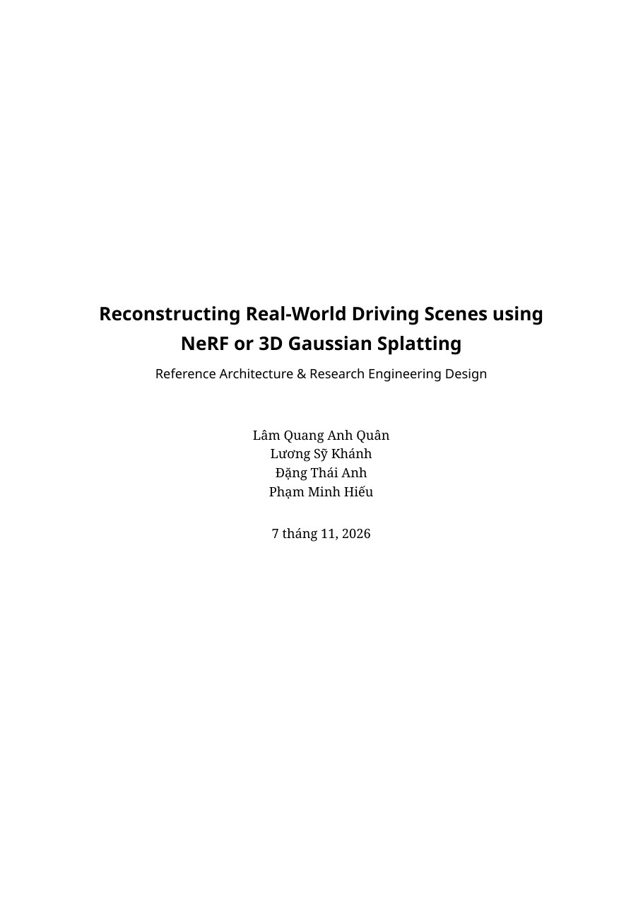
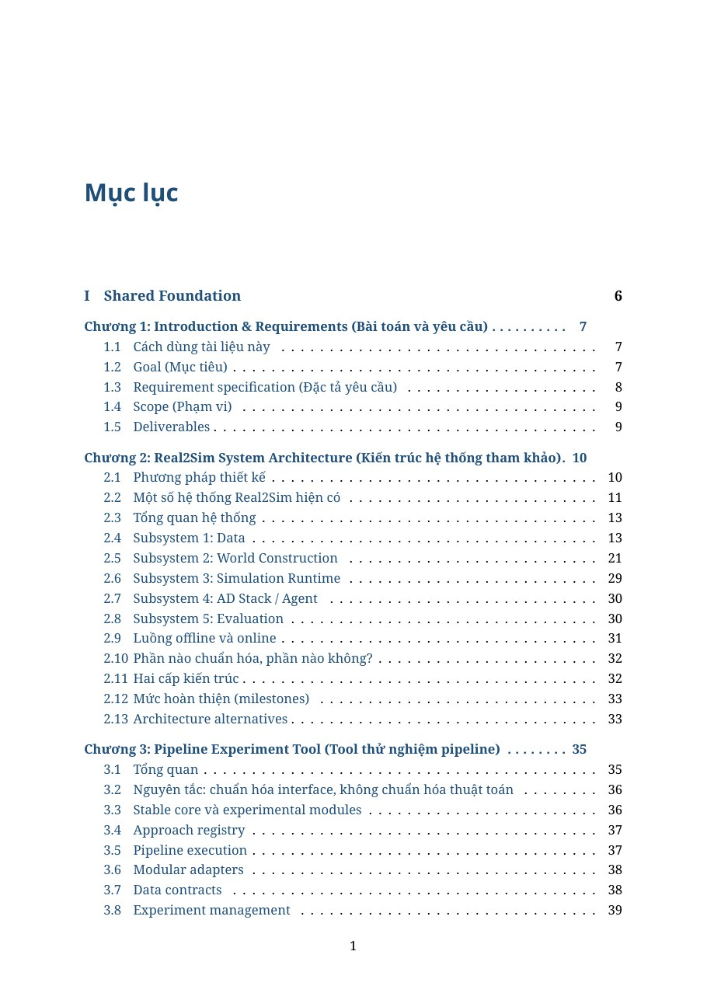
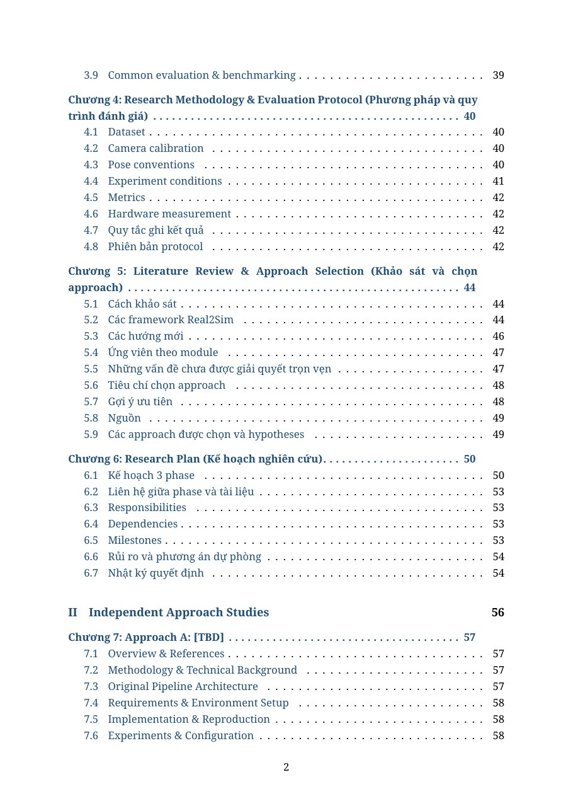
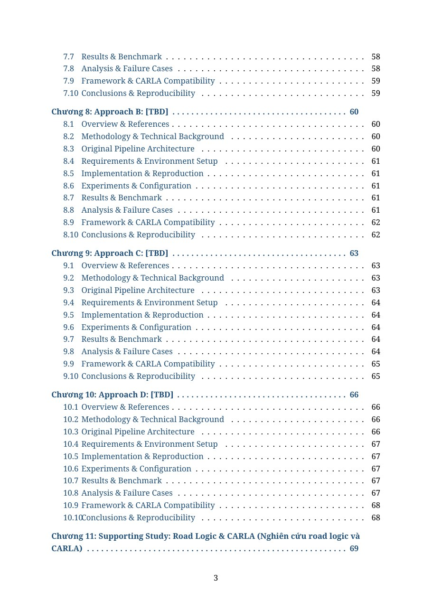
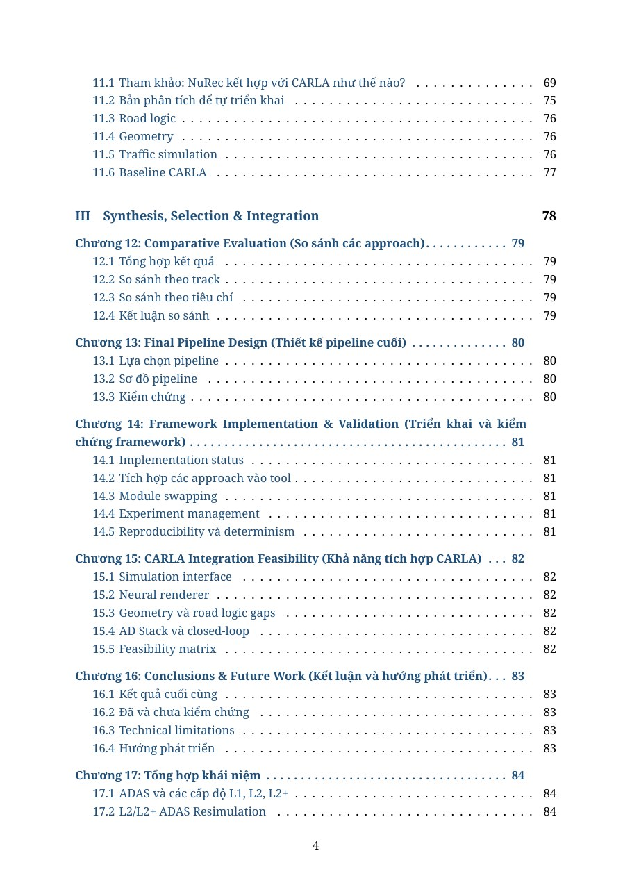
Phase 1: cả nhóm đọc và thống nhất
Phase 2: mỗi thành viên một chương
Phase 3: cả nhóm tổng hợp
Chương 17 tổng hợp các khái niệm: ADAS, resimulation, open-loop, closed-loop.
| Phần | Trạng thái |
|---|---|
| Ch 1, Ch 3 | Đã có bản nháp |
| Ch 2 | Đang chỉnh sửa: xong tới 2.5, tiếp theo 2.6 đến 2.8 |
| Ch 4, Ch 6 | Bản nháp, chờ chốt dataset và phân công |
| Ch 5 | Đã khảo sát 6 framework, chưa chốt 4 approach |
| Part II | Có mẫu chương, Ch 11 đã có phân tích NuRec + CARLA |
| Part III | Mới có khung |
Không nhất thiết là scene đẹp nhất, mà là chứng minh được phương pháp nào tái dựng được dữ liệu pinhole/fisheye + LiDAR, với chất lượng, chi phí và khả năng tích hợp mô phỏng đo được.
Pinhole/fisheye camera + LiDAR. Mức tối thiểu: chỉ có video hoặc ảnh
Khảo sát và evaluation các promising approach
Chạy thử nhiều approach, đổi method và thứ tự module
Reconstruction pipeline và reconstructed scene demo
Feasibility study, road logic, traffic, closed-loop trên khu vực thật
Cost efficiency, scalability, determinism
Evaluation và technical report
Sensor model, vehicle modeling
| Deliverable | Định dạng | Điều kiện nghiệm thu đề xuất |
|---|---|---|
| Tool thử nghiệm pipeline | Mã nguồn, hướng dẫn chạy | Đổi được method và thứ tự module, chạy lại được |
| Reconstruction pipeline | Mã nguồn và config | Chạy được từ dữ liệu đến ảnh render |
| Scene demo | Video và file scene | Render được đoạn đường đã chọn |
| Bảng benchmark | Bảng số liệu và log | Cùng dataset, cùng protocol |
| CARLA feasibility study | Một chương trong báo cáo | Có bảng khả thi, nêu rõ hạn chế |
| Technical report | Đủ các chương, được mentor đánh giá |
| Mức | Kết quả |
|---|---|
| M0 | Kiến trúc, interface, contract |
| M1 | Chạy được dựng cảnh đến đánh giá |
| M2 | Benchmark nhiều phương pháp |
| M3 | Thế giới sẵn sàng cho mô phỏng |
| M4 | Closed-loop simulation |
| M5 | Nền tảng mở rộng được |
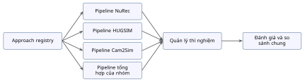
| Vấn đề | Hậu quả |
|---|---|
| Mỗi approach có format dữ liệu riêng | Phải viết lại phần đọc dữ liệu cho từng approach |
| Thứ tự bước khác nhau, có approach gộp nhiều bước | Không ép được vào một pipeline cứng |
| Output khác nhau: 3DGS, NeRF, mesh | Các phần phía sau không đọc chung được |
| Khả năng khác nhau: pinhole, fisheye, LiDAR | Không phải method nào cũng làm được mọi việc |
| Mỗi người đo một cách | Kết quả không so sánh được |
| Repository có sẵn không tự cắm vào được | Cần code nối riêng cho từng approach |
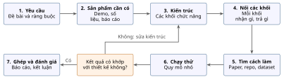
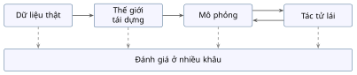
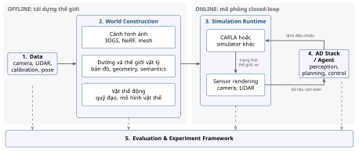
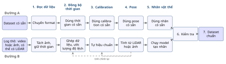
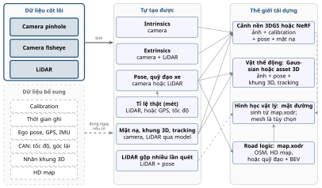
| CARLA cần | Để làm gì |
|---|---|
| Bản đồ đường | Biết đường đi, sinh waypoint, tạo mặt đường |
| Xe và người (actor) | Giao thông, va chạm |
| Đồng hồ mô phỏng | Chạy từng bước, tất định |
| Dữ liệu cảm biến | Do renderer cung cấp |
<road name="Main Road" length="100.0" id="1" junction="-1">
<planView> <!-- hình dạng đường -->
<geometry s="0" x="0" y="0" hdg="0" length="100">
<line/>
</geometry>
</planView>
<elevationProfile>...</elevationProfile> <!-- độ cao -->
<lanes><laneSection s="0">
<right>
<lane id="-1" type="driving"> <!-- làn lái xe -->
<width a="3.5"/>
</lane>
</right>
</laneSection></lanes>
</road>| Thành phần | Dùng để |
|---|---|
| Cảnh 3DGS, renderer | Tạo ảnh theo vị trí camera |
map.xodr | Đường và làn trong CARLA |
| Track vật thể | Tạo xe và người trong CARLA |
| Quỹ đạo, calibration | Đặt xe và camera đúng chỗ |
| Phép biến đổi tọa độ | Khớp CARLA với cảnh |
carla.Osm2Odrmap.xodr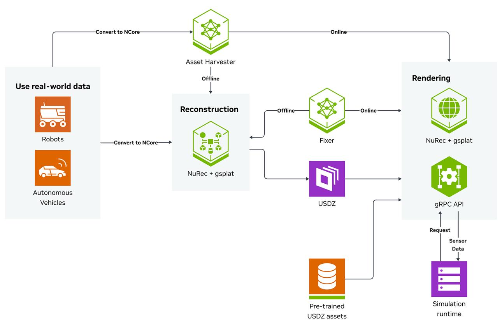
map.xodr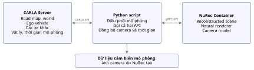
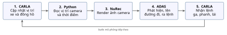
map.xodr, tạo actor từ trackrender_rgbapply_ego_control để đưa lệnh lái vàoCách làm report chung, đặc tả và phạm vi, và hướng tích hợp CARLA.
Lâm Quang Anh Quân · Lương Sỹ Khánh · Đặng Thái Anh · Phạm Minh Hiếu